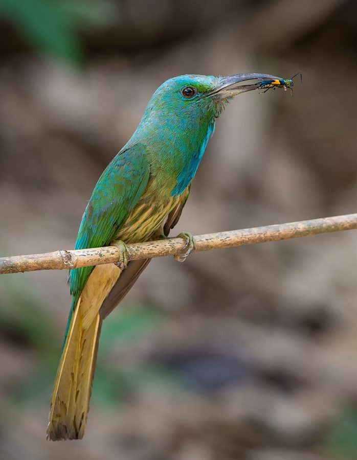

ब्लू-बियर्डेड बी-ईटरBlue-bearded Bee-eater
Nyctyornis athertoni · Meropidae · BRD-0320

- Scientific name वैज्ञानिक नाम
- Nyctyornis athertoni (Jardine & Selby, 1829)
- Family कुल
- Meropidae
- Hindi हिंदी
- ब्लू-बियर्डेड बी-ईटर
- Local names स्थानीय नाम
- blue-bearded bee-eater
- Status here यहाँ की स्थिति
- native
- Movement आवागमन
- Resident, here all year
- Known from कहाँ दर्ज
- Others have published records from the wider Awadh–Purvanchal plain, none yet from Basti–Ayodhya अवध–पूर्वांचल से दूसरों के प्रकाशित अभिलेख, बस्ती–अयोध्या से अभी नहीं
- IUCN IUCN
- LC
- Review समीक्षा
- not yet reviewed
When to look कब देखें
Present all year. साल भर मौजूद।
Tell it apart from इनसे अलग पहचानें
ब्लू-बियर्डेड बी-ईटर / Blue-bearded Bee-eater
Nyctyornis athertoni (Jardine & Selby, 1829) — Meropidae
ब्लू-बियर्डेड बी-ईटर — भारतीय उपमहाद्वीप का सबसे बड़ा और अनोखा पतरिंगा (मधुमक्खी भक्षक) है, जो तराई के घने साल और नदी तटीय वनों के भीतरी भागों में निवास करता है। अन्य छोटे पतरिंगों के विपरीत जो खुले तारों और खेतों पर बैठते हैं, यह घने जंगलों के अंदर छायादार शाखाओं पर एकांत में बैठना पसंद करता है। इसका शरीर गहरे घास जैसे हरे रंग का होता है, माथे पर हल्का नीला रंग चमकता है, और गले तथा सीने के ऊपरी हिस्से पर चमकीले गहरे नीले रंग के लंबे पंख लटके रहते हैं जो एक सुंदर 'दाढ़ी' जैसी दिखते हैं। यह जंगल में छिपकर उड़ती हुई मधुमक्खियों और बड़े ततैयों का शिकार करता है।
Quick Identification त्वरित पहचान
| Feature | Description |
|---|---|
| Habit | Very large, heavy-billed forest bee-eater perched quietly in shaded canopy |
| Upperparts | Rich grass-green with pale turquoise-blue wash on forehead and eyebrow |
| Beard | Elongated, pointed, brilliant ultramarine-blue feathers on throat and foreneck |
| Underparts | Buffy-yellow to ochraceous green, boldly streaked with dark olive-green |
| Bill | Very large, curved, laterally compressed; dark horny-brown with pale base |
| Tail | Square-ended, green with yellowish wash underneath; lacks elongated central streamers |
| Call | Deep, hollow, resonant double croaks or throaty barking notes echoing in forest |
Field tip: Look along shaded forest gullies and stream cuts. Its large size (much bigger than open-country bee-eaters), lack of long tail-pins, curved heavy bill, and brilliant sky-blue to deep azure elongated throat feathers readily distinguish this species.
हिंदी:
यह सामान्य पतरिंगों से आकार में काफी बड़ा और गहरे हरे रंग का होता है।
इसके गले पर चमकीले नीले रंग के लंबे पंख लटकते हैं जो दाढ़ी की तरह दिखते हैं।
इसकी पूंछ के बीच में कोई लंबा नुकीला पंख (पिन) नहीं होता।
Morphology आकारिकी
Measurements as given by Baker (1927 as "Bucia athertoni"):
| Measurement | Range |
|---|---|
| Wing | 128–141 mm (Baker 1927) |
The Blue-bearded Bee-eater is a large, stout-bodied coraciiform with specialized throat plumage. The crown, mantle, back, and wings are deep grass-green. The forehead and superciliary region are washed with shining pale greenish-blue or turquoise.
The centre of the throat and upper foreneck are adorned with elongated, loose-webbed feathers of a brilliant azure or ultramarine blue that can be puffed out during courtship and aggressive displays to form a conspicuous "beard."
The underparts below the blue beard are pale buffy-yellow or ochraceous-green, heavily marked with longitudinal dark olive-green shaft-streaks. The tail is squared and even at the tip, entirely lacking the elongated central pins characteristic of the genus Merops.
The bill is long, curved, and heavy, dark horny-brown with a pale horn-whitish base to the lower mandible. The iris is orange-yellow to deep reddish-brown. The legs and zygodactyl-derived syndactyl feet are dull purplish-brown or greenish-slate.
Vocalisations. A deep, throaty, resonant series of guttural croaks or hollow barking whistles transcribed as korr-korr or k-r-r-r-o-o-k, astonishingly non-passerine in quality.
हिंदी:
इसके पंखों की लंबाई 128 से 141 मिमी होती है।
इसकी चोंच भारी, घुमावदार और मजबूत होती है तथा पैर छोटे और भूरे-सलेटी होते हैं।
यह जंगल में मेंढक या बगुले जैसी भारी और गूंजती हुई आवाज निकालता है।
Behaviour & Ecology व्यवहार और पारिस्थितिकी
Nyctyornis athertoni is an arboreal predator that perches quietly and upright on shaded horizontal boughs beneath the forest canopy. It sits motionless for long periods, slowly pivoting its head to scan for passing aerial insects.
When prey is sighted, it launches into a swift, agile flight, snapping the insect in mid-air with an audible click of its heavy mandibles before looping back to the same perch. It frequently batters captured wasps and hornets against the branch to express the venom and detach the sting before swallowing.
हिंदी:
यह घने पेड़ की छांव में बिल्कुल शांत बैठकर उड़ते हुए कीड़ों पर नजर रखता है।
कीड़ा देखते ही यह तेजी से उड़कर हवा में उसे पकड़ता है और डाल पर पटककर डंक तोड़ देता है।
Life Cycle / Phenology जीवन चक्र
Baker (1927, p. 243) records that April and May are the principal breeding months, with eggs found from February to August. The pair excavates a horizontal tunnel into steep earthen banks along forest tracks or ravines, laying glossy white eggs in a terminal chamber containing insect remnants. Both adults share in burrowing and rearing the brood.
हिंदी:
बेकर (1927) के अनुसार इसके प्रजनन का मुख्य समय अप्रैल और मई होता है। यह जंगल के रास्तों या नालों की खड़ी मिट्टी की दीवारों में गहरी सुरंग खोदकर गोल सफेद अंडे देता है। नर और मादा दोनों मिलकर बच्चों की देखभाल करते हैं।
Host Plants or Prey आहार
The Blue-bearded Bee-eater is a specialized predator of large stinging hymenopterans and other flying forest arthropods:
- Giant honeybees (Apis dorsata) and Asian honeybees (Apis cerana)
- Large forest hornets (Vespa species) and solitary hunting wasps
- Wood-boring beetles, jewel beetles, and cicadas taken in flight
- Dragonflies, mantises, and large flying grasshoppers
- Occasional flying termites emerging during pre-monsoon swarms
It also searches flowering forest canopies, particularly flowering Bombax trees, where it captures insects attracted to blossoms and samples nectar.
हिंदी:
यह मुख्य रूप से जंगली मधुमक्खियों, बड़े ततैयों और भंवरों का शिकार करता है।
यह सेमल के खिले हुए फूलों पर आने वाले कीड़ों को पकड़ता है और फूलों का रस भी पीता है।
Predators / Natural Enemies शत्रु
Carnivores, snakes, and birds of prey take birds of this size or raid earthen nest tunnels. No source opened for this atlas names a specific predator of this species.
हिंदी:
मांसाहारी जानवर, सांप और शिकारी पक्षी इस आकार के पक्षियों का शिकार करते हैं या मिट्टी की सुरंगों में बने घोंसलों पर हमला करते हैं। इस एटलस के लिए देखे गए किसी स्रोत में इसके किसी विशिष्ट शिकारी का नाम दर्ज नहीं है।
Agricultural / Human Relevance कृषि प्रासंगिकता
The Blue-bearded Bee-eater feeds on bees, wasps, beetles, and other flying insects captured among foliage and flowers, and takes nectar from flowering trees (Baker 1927, p. 243). It is protected under the Wildlife (Protection) Act, 1972.
हिंदी:
ब्लू-बियर्डेड बी-ईटर मधुमक्खियों, ततैयों, भृंगों और फूलों के कीड़ों को खाता है और सेमल जैसे पेड़ों के फूलों से मकरंद भी लेता है (बेकर 1927)। यह वन्यजीव (संरक्षण) अधिनियम, 1972 के तहत संरक्षित है।
Expected Locally स्थानीय रूप से अपेक्षित
Not a field record. Written from published accounts for eastern Uttar Pradesh. No confirmed local sighting yet — if you have seen it, that is what the atlas needs.
अभी तक स्थानीय पुष्टि नहीं। यह विवरण प्रकाशित स्रोतों से है, किसी अवलोकन से नहीं।
Look along shaded forest gullies, deep river cuts, and wooded nullahs in moist deciduous sal tracts in the northern Terai.
GBIF holds published records from the wider Awadh–Purvanchal plain, none yet from Basti–Ayodhya.
A first record would be a photograph of the bird with place and date, sent through the About page.
Distribution वितरण
Global range: Discontinuous distribution across the Indian subcontinent and Southeast Asia, including the Western Ghats, northern India and Nepal along the Himalayas, through Indochina to Hainan.
Regional status: Resident in dense moist deciduous forest belts in northern Uttar Pradesh, including Dudhwa and Katarniaghat forest reserves.
हिंदी:
यह हिमालय की तलहटी, पश्चिमी घाट और दक्षिण-पूर्व एशिया के घने वनों में पाया जाता है।
Research Questions शोध प्रश्न
- How do prey size and handling techniques differ when Nyctyornis athertoni captures venomous giant hornets versus non-venomous cicadas? / ततैया और बिना डंक वाले कीड़ों का शिकार करते समय इसके व्यवहार में क्या अंतर होता है?
- What soil moisture and bank stability thresholds determine burrow site selection along riverine cuttings? / मिट्टी की खड़ी दीवारों में घोंसले की सुरंग खोदने के लिए यह किन परिस्थितियों को चुनता है?
- What is the extent of dietary overlap between the Blue-bearded Bee-eater and smaller open-country bee-eaters along forest borders?
- How do high-intensity monsoon floods affecting riverbanks alter annual nesting burrow availability?
- Can community nature observers map active nesting colonies along forest stream embankments? (A photographic record of birds carrying hornets to burrows provides confirmation of local breeding.)
Similar Species मिलती-जुलती प्रजातियाँ
| Species | How to tell apart | हिंदी | |
|---|---|---|---|
| [[asian_green_bee_eater\ | Asian Green Bee-eater]] (Merops orientalis) | Much smaller size; bright emerald green body with rufous crown; black necklace; long pointed central tail streamers | छोटा पतरिंगा |
| [[blue_tailed_bee_eater\ | Blue-tailed Bee-eater]] (Merops philippinus) | Smaller size; bright blue rump and tail; chestnut throat; black eye-mask; long central tail pins; perches openly on wires | बड़ा पतरिंगा |
Field rule: The combination of very large size, square tail without central elongated pins, heavy curved bill, and bright azure-blue throat beard distinguishes the Blue-bearded Bee-eater from all Merops species.
हिंदी:
छोटा और बड़ा पतरिंगा खुले तारों पर बैठते हैं और उनकी पूंछ में लंबा पतला तार (पिन) होता है, जबकि इसकी पूंछ चौकोर होती है और गले पर नीली दाढ़ी होती है।
Taxonomy & Classification वर्गीकरण
Original description. Described by Sir William Jardine and Prideaux John Selby in 1829 in Illustrations of Ornithology (vol. 2, pl. 58), under the basionym Merops athertoni. Formerly placed under "Bucia athertoni" by Baker (1927).
Subspecies. Two subspecies are recognized; the Indian population belongs to the nominate race Nyctyornis athertoni athertoni (Jardine & Selby, 1829).
Family and order placement. Order Coraciiformes; family Meropidae (bee-eaters).
IUCN status rationale. Evaluated as Least Concern (LC) by the IUCN Red List due to a wide geographical distribution across South and Southeast Asia.
हिंदी:
जार्डिन और सेल्बी ने 1829 में इसका वर्णन किया था। यह मेरोपिडे कुल का सदस्य है और वैश्विक स्तर पर सुरक्षित माना जाता है।
Photo Gallery फोटो गैलरी
No photos yet — add field photos to media/species/blue_bearded_bee_eater/ and run node scripts/sync_photos.js.
Photos needed आवश्यक फोटो
- [ ] Adult perched in shade showing bright blue throat beard (छायादार डाल पर बैठा नीली दाढ़ी वाला वयस्क पक्षी)
- [ ] Bird carrying hornet to earthen bank burrow (मिट्टी के घोंसले में ततैया ले जाता पक्षी)
References संदर्भ
- Jardine, W. & Selby, P. J. (1829). Illustrations of Ornithology, vol. 2. Lizars, Edinburgh, pl. 58 (as Merops athertoni).
- Baker, E. C. S. (1927). The Fauna of British India, Including Ceylon and Burma. Birds. Vol. 4. Taylor & Francis, London, p. 242 (as "Bucia athertoni").
- Ali, S. & Ripley, S. D. (1987). Compact Handbook of the Birds of India and Pakistan. Oxford University Press, New Delhi.
- Grimmett, R., Inskipp, C. & Inskipp, T. (2011). Birds of the Indian Subcontinent. 2nd ed. Christopher Helm, London.
- BirdLife International (2024). Nyctyornis athertoni. The IUCN Red List of Threatened Species 2024: e.T22683744A264317182.
- GBIF Occurrence Data — Nyctyornis athertoni (Jardine & Selby, 1829), India (2025).
Source file: species/fauna/birds/blue_bearded_bee_eater.md